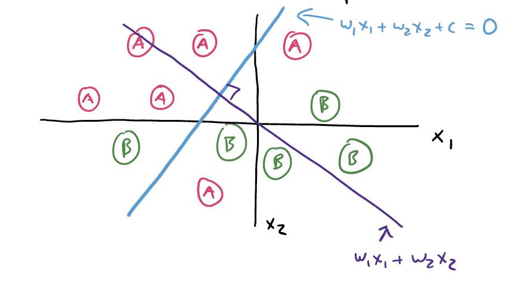
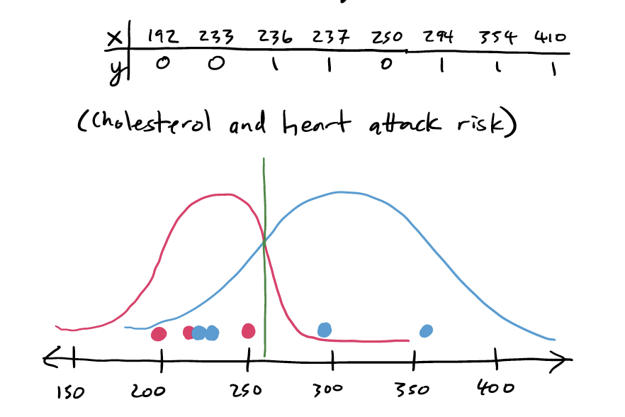
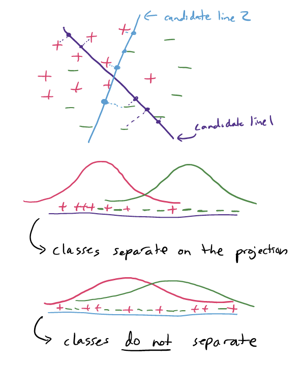
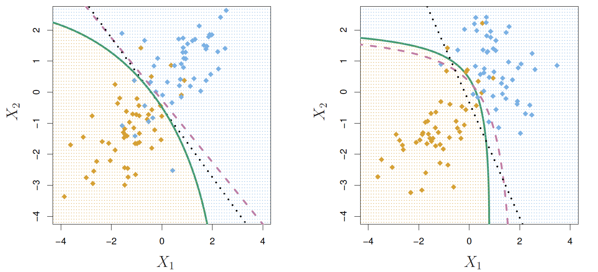
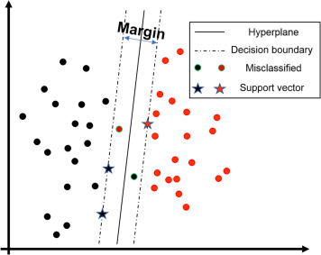
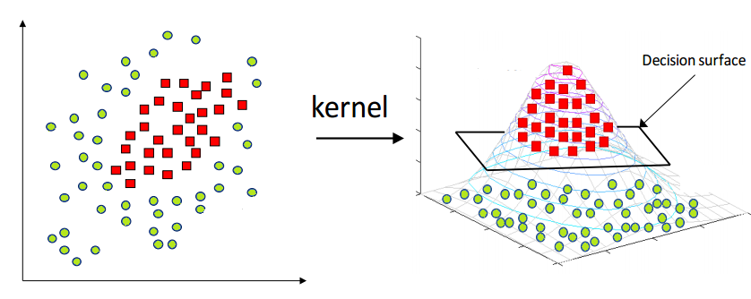

import pandas as pd
from sklearn.pipeline import Pipeline
from sklearn.neighbors import KNeighborsClassifier
from sklearn.tree import DecisionTreeClassifier
from sklearn.linear_model import LogisticRegression17 Linear Classifiers
17.1 Introduction
In this chapter, we will explore two new model types: Linear Discriminant Analysis (LDA) and Support Vector Classifiers (SVC). Both of these approaches, along with Logistic Regression from the previous chapter, share the feature of being what is called Linear Classifiers
Note
If you do not have the sklearn library installed then you will need to run
pip install sklearn
in the Jupyter/Colab terminal to install. Remember: you only need to install once per machine (or Colab session).
17.2 Linear Classifiers
In binary classification, our goal is to predict which of two categories a target variable belongs to, using one or more predictor variables.
Linear classifiers are a general type of modeling approach that uses a linear combination of the predictors to create a score, and then assigns a class based on this score. That is, for some constants \(w_1, ..., w_p\) and \(c\),
\[z_i = w_1 x_{i1} + w_2 x_{i2} + \cdots + w_p x_{ip} + c\] and we predict \(y_i = 1\) if \(z_i \geq 0\), and \(y_i = 0\) otherwise.
The following picture illustrates a simple two-predictor setting. We can see that categories “A” and “B” are somewhat different, with “B” falling on the bottom right and “A” in the top left.

The purple line, \(w_1 x_1 + w_2 x_2\) is the equation for the score. Where the blue and the purple line cross are the exact values of \(x_1\) and \(x_2\) that would make the score equal to exactly \(0\).
Therefore, the blue line is the linear separator for these two categories, based on this particular score function. Future observations that land up and to the left of this line would be predicted as “A”, and those that land down and to the right are predicted as “B”. This is also sometimes called the decision boundary.
17.2.1 Fitting a linear classifier
Much like with ordinary linear regression, the big question we need to answer is: what values of \(w_1, ..., w_p\) and \(c\) will give us the best possible predictions? This, of course, depends on your definition of “best”.
As we shall see, Logistic Regression, LDA, and SVC are all linear classifiers; the only difference is that they take very different approaches to choosing the “best” \(w\) and \(c\) values.
17.2.2 A bit of notation
For simplicity you will sometimes see the vectors \((w_1, ..., w_p)\) and \((x_{i1}, ..., x_{ip})\) written as simply \(\mathbf{w}\) and \(\mathbf{x_i}\). This lets us write the score \(z_i\) in shorthand as the “matrix product” of the two vectors:
\[z_i = \mathbf{w}^T\mathbf{x_i} + c\] Similarly, we might sometimes define our prediction \(y_i\) as:
\[y_i = \mathcal{I} \{z_i \geq 0\}\]
where \(\mathcal{I} \{\}\) is the indicator function, equal to 1 if the statement is true and 0 if not..
17.3 Logistic Regression as a Linear Classifier
Recall that in logistic regression, we wanted to model the log-odds of an observation being in a particular category. To do so, we fit the model:
\[\text{log-odds} = \beta_0 + \beta_1 x_1 + ... + \beta_p x_p\] For consistency, let’s just call the log-odds of the \(i\)-th observation \(z_i\). Then we’ll call \(\beta_1 = w_1\), \(beta_2 = w_2\), etc. and call \(\beta_0 = c\).
Clearly, then, the log-odds in this case is simply a score based on a linear combination of the predictors.
But does it fit that \(z_i = 0\) is our “cutoff” for the score, i.e., our decision boundary? Yes!
The log-odds equation is
\[z_i = \log \left(\frac{p_i}{1 - p_i}\right)\]
where \(p_i\) is the probability of the \(i\)-th observation being in category 1.
If \(z_i\) is negative, that means the value inside of the log must be less than one, which means that \(p_i < (1 - p_i)\).
If \(z_i\) is positive, that means the value inside of the log must be greater than one, which means that \(p_i > (1 - p_i)\).
In other words: The cutoff \(z_i = 0\) is exactly the same as the cutoff \(p_i = 0.5\) - and it sure seems pretty reasonable for us to predict Category 1 whenever the probability is above 50%!
17.3.1 Loss function
So, what is the definition of “best” that is used when fitting Logistic Regression? Essentially, this model takes a probabilistic approach: The “best” choices of \(\mathbf{w}\) and \(c\) are the ones that lead to \(p_i\) values (probabilities) that would be most likely to produce the observed true categories. This method of model fitting is called Maximum Likelihood Estimation.
In this class, we will omit the mathematics of the loss function.
17.4 Linear Discriminant Analysis
Warning
There is another model - common in Machine Learning, but completely different from Linear Discriminant Analysis - called “Latent Dirichlet Allocation”. Unfortunately, both are usually abbreviated as “LDA”. Be careful when using the internet for resources; make sure you are reading about the right LDA!
In Linear Discriminant Analysis, we assume that the scores our observations follow two different Normal distributions. First consider a one-dimensional example: suppose we measure the cholesterol of eight people, of which five have heart disease. We might mark these eight values on a number line. Then, we might assume that these values came from some overarching Normal distribution, like this:

Our idea of the “best” decision boundary, if our assumption about Normal distributions is correct, is the one that maximizes the probability of future observations falling on the “correct” side of the line.
How does this work with more than one predictor? Well, instead of the number line in the above illustration containing cholesterol values, imagine that it contained scores from some \(z = \mathbf{w}^T \mathbf{x} + c\). We still assume that we end up with two different Normal curves: one for each category. Then, our decision boundary would be at \(z = 0\).
17.4.1 Loss function
So, how does LDA decide on a “best” choice of \(w\)’s and \(c\)? It finds the score function that creates the largest separation between the two resulting estimated Normal curves.

17.4.2 QDA
Mathematically, in LDA we also assume that both Normal curves have the same variance. This is a pretty big assumption, but it is necessary for LDA to be a linear classifier, and it creates some mathematical conveniences for solving for the \(w\) and \(c\) values.
A variant on LDA is called Quadratic Discriminant Analysis (QDA). In this approach, we allow the two curves to have different variances. Through some math details we won’t get into here, this creates a quadratic (non-linear) classifer; i.e., the score is given by
\[z_i = w_1 (x_{1i} - a_1)^2 + \cdots + w_p (x_{pi} - a_p)^2 + c\]
Much more complicated under the hood, but sometimes this can be a better classifier than a simple linear separator.

Fortunately, we aren’t responsible for the more complex math, and it’s easy to simply use a different model specification in python!
17.5 Support Vector Classifiers/Machines
A Support Vector Classifier (SVC) takes a very non-statistical approach to choosing the “best” linear separator. The logic goes like this:
The best separating line would be one where one category is all far to one side, and the other category is all far to the other side.
In real data, this is not possible, so we have to “ignore” some observations that land in the “wrong” place.
The SVC model approach is to draw soft margins around the score cutoff of \(z_i = 0\), between \(z_i = -1\) and \(z_i = 1\). This means that we want the to choose our \(w\)’s so that the space between the margins is as big as possible, to keep the two groups separate - but we acknowledge that there may be some observations “caught” in the margins. The observations right at the margins are called the support vectors.

17.5.1 Loss function
The way the SVC model fitting chooses the “best” \(w\)’s and \(c\) is to balance two concerns:
We want as much of our training data as possible to be on the “correct” side of the line and outside the margin.
We want as big of a margin as we can get.
In the loss function for SVC, we will find a tuning parameter, \(\lambda\) or sometimes \(C\), which is the balancing of these two concerns, much like in penalized regression.
17.5.2 Support Vector Machines
As with LDA and QDA, there is a way to “level up” an SVC model into a non-linear classifier, called a Support Vector Machine.
The way this works is that a nonlinear transformation function is applied to all the predictors, and then an SVC is fit. This transformation is called the kernel.

So, how do we know which kernel to use? Radial? Quadratic? Something else? We don’t really have a magic way to know. We simply try many different options and see which one produces the best metrics.
Warning
The way the loss functions are set up for SVM and SVC require us to represent our two categories as 1 and -1 instead of 1 and 0. Some implementations, including sklearn, will handle this for you. Others will not. If you are ever getting very strange results for SVM/SVC - such as decision boundaries at positive or negative infinity - this is worth checking up on.